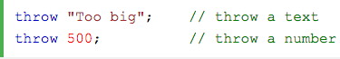
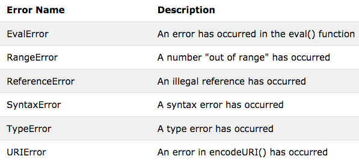

When an error occurs, JavaScript will normally stop and generate an error message.
The technical term for this is: JavaScript will throw an exception (throw an error).
The throw statement allows you to create a custom error.
Technically you can throw an exception (throw an error).
The exception can be a JavaScript String, a Number, a Boolean or an Object:

This example examines input. If the value is wrong, an exception (err) is thrown.
The exception (err) is caught by the catch statement and a custom error message is displayed:
Input number between 5 and 10
JavaScript has a built in error object that provides error information when an error occurs.
The error object provides two useful properties: name and message.
Six different values can be returned by the error name property:

A RangeError is thrown if you use a number that is outside the range of legal values.
For example: You cannot set the number of significant digits of a number to 500.
A ReferenceError is thrown if you use (reference) a variable that has not been declared: